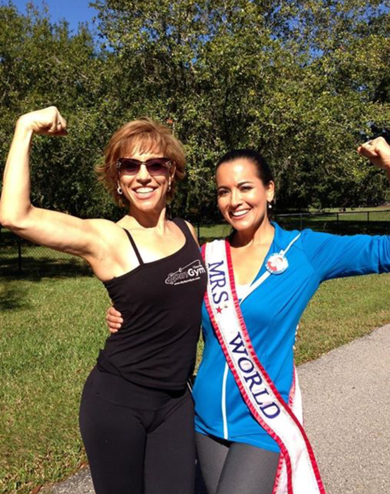
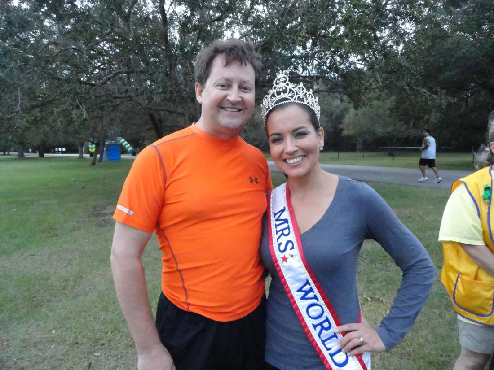
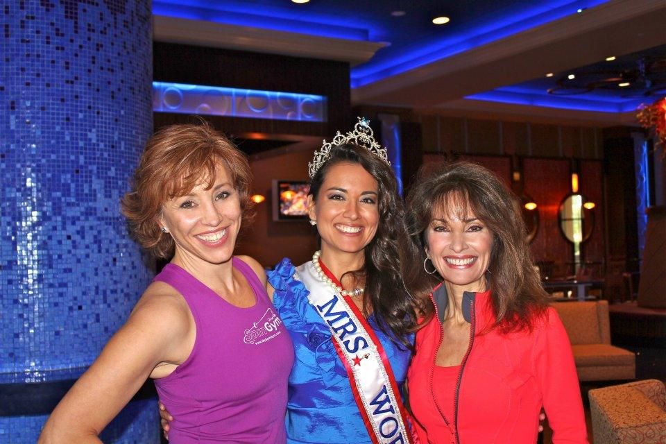

April Lufriu, Susan Lucci & me!
In her first interview since passing on the title, Mrs. World 2012 April Lufriu took time out from her busy schedule to chat about modeling, pageants, and the ongoing fight to save her family’s vision.
If her face looks familiar to you, it could be because April Lufriu has traveled the globe for the past three years as the ambassador for America’s married women. But what her warm smile and cheerful demeanor won’t tell you is that April and her family are battling against time to save their eyesight due to Retinitis Pigmentosa, or RP, a hereditary degenerative retinal condition that causes blindness.
“I have a history with the Foundation Fighting Blindness as establishing the Tampa Bay Vision Walk here in 2007, with my sister, and I was supporting my sister because at the time she was the only one in our family with Retinitis Pigmentosa, which is a blinding disease.”

But April’s involvement with the Tampa Bay Vision Walk took a more personal turn when her children became suspected of having the same condition that her sister had been battling for several years.“I think it was my second or third Vision Walk, and it started with my son with just a routine eye exam at Vision Works. And right off the bat (the doctor) was alarmed but he could not tell me what it was. So I went back to our ophthalmologist probably a week or two after that, as soon as I could get the earliest appointment, and at that time I took my daughter.”
The ophthalmologist confirmed the possibility that both her children (ages 6 and 10 at the time) had the possibility of carrying the hereditary gene, and he suggested they seek the advice of a specialist.
“I felt so desperate and so lost and confused. I called the Foundation Fighting Blindness crying and said, ‘I need your help.’ So, they made a special appointment for the family and I to go to Jacksonville to see this world-renowned eye doctor.”
It was during this weekend-long round of exams on her children that Lufriu learned the news, not only confirming both her children had RP, but she herself received the same diagnosis.
“Ironically, the doctor had told me to come and sit in the chair and he dilated my eyes. I was kind of combative at first, I was questioning why he wanted to look at me. I got this really yucky feeling in my tummy, I knew something was wrong. And he looked at me, he goes, ‘Do you realize you have RP?”
The devastating news of a positive diagnosis for her and her children of X-Linked RP, an aggressive form of the condition, sent April into a temporary state of depression.
“It was like the earth could have opened up and swallowed me, I couldn’t believe my ears. And my husband pulled me out of it by basically telling me things are going to be okay, because the kids, their lives are not threatened. And when he put it into perspective like that I said, ‘You’re right, things are going to be okay.”
April’s long, personal journey in the battle against RP soon led her to compete at the Mrs. Florida America pageant, which would send her on the path to becoming the next Mrs. America, and then Mrs. World.
“After my diagnosis, I had to figure out a way to get the word out, because now there was a whole bigger picture, besides just fundraising every year and supporting my sister, now it involved my children. Before being diagnosed it was always so hard for anybody to listen to me. I had never gone on a radio show, and I never had a television interview, I never had an article written about our family, I was just April supporting her sister. And now it was April and her two kids and herself, and I wasn’t getting anywhere. So, knowing how pageantry kind of highlights the young ladies, I decided I would try that.”
With little time to prepare for Mrs. Florida America, April entered the pageant in which she would be judged amongst several married women statewide in the categories of interview, swimwear, and evening gown.
“Two months after being diagnosed, I entered the Mrs. Florida America pageant. I only had a week or two to prepare, and I wasn’t prepared, I was the 2nd runner-up. And I did not plan on going back, I was kind of discouraged because I just felt like maybe it wasn’t for me.”

But when one of the pageant sponsors contacted Lufriu to personally give the news that she had won the interview category, she changed her mind and decided to try again the following year.“When I went back, I was determined to win, no one was going to stop me. And, as you can see, I won. I didn’t even think beyond to America and World. I was standing on stage, everyone coming up and congratulating me, then they said, ‘Okay, you have 6 weeks until Mrs. America.’ And I said to myself, ‘What did I get myself into?”
But Lufriu went on to win the titles Mrs. America 2011 and Mrs. World 2012, sweeping the interview category and breaking the mold of the stereotypical beauty queen as the oldest and shortest (5’4″) Mrs. World on record.
“What I really concentrated on – and I think a lot of girls concentrate more on going to the gym and working out – I was always out publicly speaking and being mentally prepared. After I won Mrs. America, the head judge came up to me and said, ‘I have to tell you, you won interview, and you were my winner after I saw you.’ So what I tell anybody that I am mentoring, especially a beauty queen, is to please get up and speak, because once they hear you and they know you can communicate, you will change their outlook.”
Now that she has completed her reign as Mrs. World, April remains the national spokesperson for the Foundation Fighting Blindness. You may also see her in upcoming modeling appearances on HSN, numerous television commercials, ads, and even on product packaging in your local stores.
“I have actually been modeling since 2008, but I didn’t really dig my heels into it until after my reign was over, because it was so time-consuming. And I do it because, number one, it’s extra money for my kids, we have such expensive treatments. But I’ve always been so shy and insecure, and in my older years I’ve learned to be confident. I mean, I don’t walk into every situation and feel at my best, so it’s something I continuously have to work on.”
Given her tremendous success in modeling and pageants, April has some worthy advice for aspiring models and pageant queens.
“My best advice is to really get to know yourself. And I know that might sound crazy, but I think that’s the hardest question you’re going to be asked, ‘Who are you? What are you about?’ And it might seem like a very simple, straightforward question, but it is the hardest thing to really know about yourself.”
She also shares this personal tip for anyone preparing for a pageant interview or job interview.
“I always say write a little biography about yourself, with everything from your work experience, personal experience, just everything, because if you know who you are and you come to the table with that, it’s very impressive. We all have something special about ourselves, so really know how special you are and be proud and be confident. It will make you stand out.”
And while she has held what many consider a prestigious honor as the U.S. and worldwide representative of married women, Lufriu confesses that modeling and pageants have contributed to her own personal growth and ability to confront her family’s obstacles.
“When I do modeling or speaking, it helps me to grow and improve, and I think it’s a great example for my kids to see, ‘Look at mom, she’s out there doing something different, she’s not afraid.’ And sometimes I am afraid, but my best motto for anything in life is ‘Don’t let this be a threat.’ So I have a very good way of hiding it, but it’s a challenge.”
Despite all her personal accomplishments, April’s biggest challenge remains the battle against RP to save her family’s eyesight.
“When I speak, a lot of times people don’t realize I have RP because I don’t concentrate on myself, I talk about my kids. It’s what you do when you’re a mom, you always put your family first. So, it’s my kids that scare me more than anything, and especially my boy because it will cause him to go blind two times faster. It just kills me, and I see it happening slowly, so time is not my friend. Time is my enemy.”
For more information on how you can participate in the fight against RP, visit the Foundation Fighting Blindness website or find a Vision Walk near you. If you’re located near the Tampa area, join former Mrs. World April Lufriu at her annual Tampa Bay Vision Walk in November.

Free · live on Zoom every Sunday
The Secret Pitch Formula
Join Forbes live for the Pitch Secrets Masterclass. Over 80,000 people have learned the 7-second hook, the three pitch patterns behind $2.5 billion in sales, and how to close without sounding salesy. Free, with a gift worth $500 for registering.
Sundays, 2 p.m. PT / 5 p.m. ET. Registration and the Zoom link are at pitchsecretstraining.com.